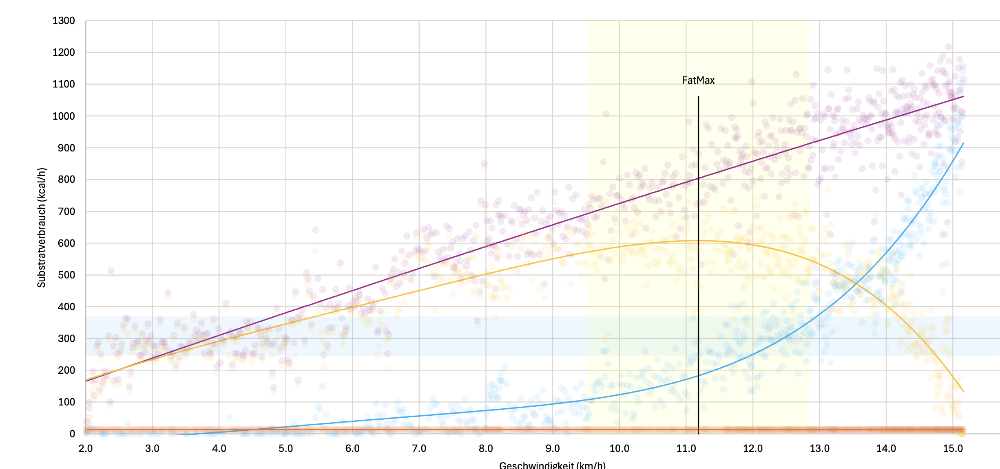

"Substrate kinetics" refers to the movement of different energy sources in relation to each other under stress. Not only the amount of energy required is important, but also the type of curves. The greater the proportion of metabolized fats, the better the body can not only absorb oxygen but also use it for energy production.
The protein portion is represented as a constant, since the daily required amount cannot be measured via respiration but is included based on calculated UN value.